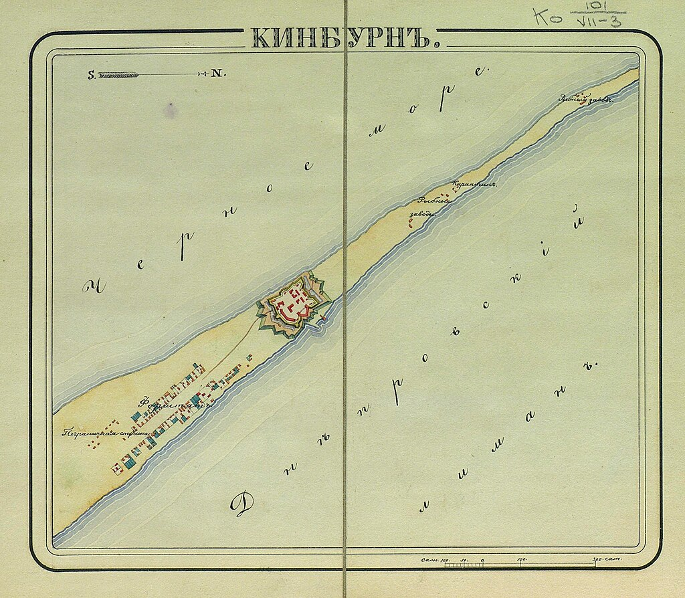
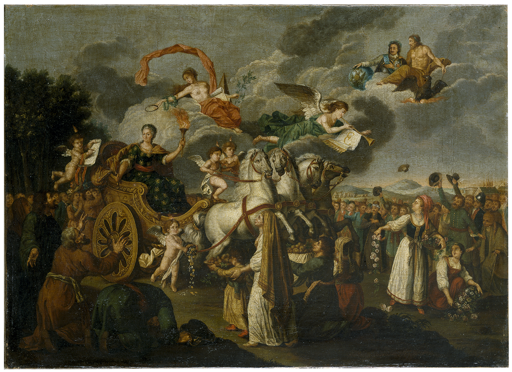
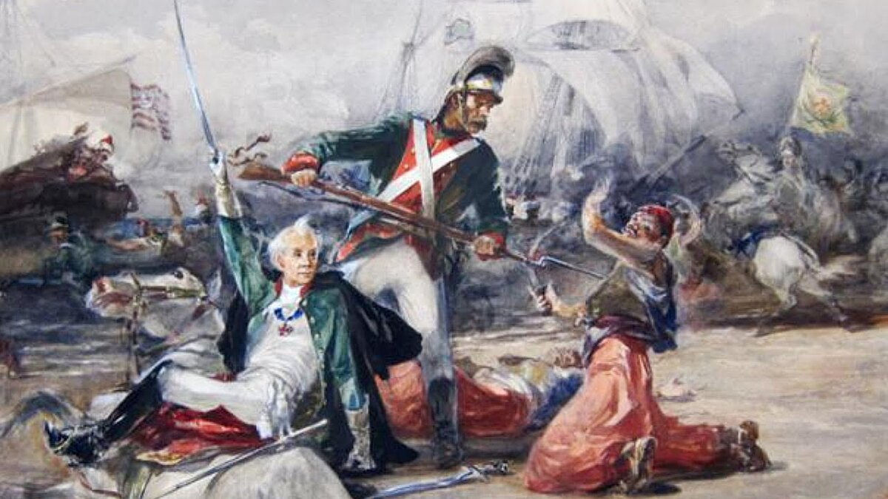
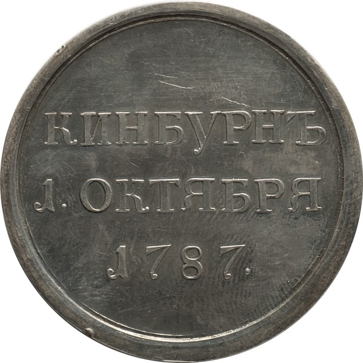

Кинбурнская крепость стала первым объектом нападения турецких войск во второй русско-турецкой войне. Это было связано с её выгодным стратегическим положением недалеко от турецкой крепости Очаков (таким образом, она могла являться базой для подготовки захвата Очакова), а также от базы русского флота в Херсоне, защищая её (в случае успеха русский флот был бы сожжён). Кроме того, овладение Кинбурном открывало путь к восстановлению турецкого контроля над Крымом.


Турецкий флот в составе трёх линейных кораблей, 4 фрегатов, 4 бомбардирских кораблей (плавучих батарей), 14 канонерских лодок в течение сентября 1787 года обстреливал Кинбурн и выявлял огневые точки русских войск. 1 (12) октября 1787 в 9 часов утра турецкий десант под командованием янычарского аги Сербен-Гешти-Эюб-аги начал высаживаться на берег. Сразу после высадки Хасан-паша приказал отвести корабли, чтобы его войска не надеялись на эвакуацию, турецкий флот стал поддерживать нападающих огнём. Во время высадки турок А. В. Суворов находился в церкви по случаю праздника Покрова Пресвятой Богородицы. Обратившимся к нему с сообщением о начале высадки турок и строительства ими укреплений офицерам, он приказал не открывать ответный огонь и ждать пока высадятся все турецкие войска. Сам в это время продолжал слушать литургию. Спокойствие Суворова придало уверенности в себе русским воинам.
К часу дня, выкопав 15 траншей, турецкие войска подошли на близкое расстояние к крепости. В это время в Кинбурне было 1 500 человек пехоты, а ещё 2 500 пехоты и лёгкой конницы стояло в качестве резерва в 30 вёрстах сзади от крепости. Когда турки подошли к крепости на расстояние 200 шагов, последовал залп из всех орудий, и началась контратака. Отряд полковника Иловайского, обойдя крепость слева по берегу Чёрного моря, и Орловский пехотный полк под началом генерал-майора Река, справа, ударили с флангов, а затем батальон Козловского полка во главе с Суворовым ударил во фронт. Значительные силы турок и большие потери среди Орловского полка вынудили русских отойти, при этом сам Суворов был ранен картечью в бок и едва не был убит янычарами, его спас гренадер Степан Новиков.


Победа при Кинбурне стала первой крупной победой русских войск в русско-турецкой войне 1787—1792 годов. Она фактически завершила кампанию 1787 года, поскольку турки в этом году больше не предпринимали активных действий. За победу Екатерина II наградила Суворова орденом Андрея Первозванного. Для отличившихся в битве были изготовлены 20 специальных медалей «За отличие в Кинбурнском сражении», которые вручили наиболее отличившимся участникам по выбору самих солдат.

